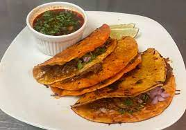

Birria Tacos

Description
Authentic Mexican birria tacos, Jalisco-style, made with braised beef
roasted in a fragrant 3-chile sauce with a delicious spice mix.
Ingredients
- 6 dried guajillo chille peppers, seeded
- 2 dried ancho chiles, stemmed and seeded
- 4 dried chile de arbol peppers
- 4 pounds beef chuck roast
- Salt and pepper
- Olive oil
- 4 Roma tomatoes
- 2 tbsp white vinegar
- 2 garlic cloves
- 4 whole cloves
- Ground cinnamon
- Cumin
- Thyme
- Marjoram
- Oregano
- Corn tortillas
- White onion
- Cilantro
Steps
- Fill a pot with water and bring to a boil. Add guajillo, ancho, and arbol
chile peppers; boil for 5 minutes. Remove pot from heat and allow peppers to
soak until cool. Drain, reserving 1/4 cup of the water.
- Preheat the oven to 325 degrees F (165 degrees C).
- Rinse meat and pat dry with paper towels. Season with salt and pepper.
- Heat oil in a Dutch oven over medium-high heat. Add meat and cook until
browned on all sides, about 10 minutes. Remove from heat.
- Line a heavy cast-iron grill pan or griddle with aluminum foil and place over high
heat. Arrange tomatoes in a single layer on top. Grill until tomato skin is
burned on all sides and begins to peel, 3 to 5 minutes.
- Combine soaked chile peppers, cooked tomatoes, vinegar, garlic, 2 teaspoons
black pepper, cloves, cinnamon, cumin, thyme, marjoram, oregano, and salt to
taste in a blender. Pour in reserved 1/4 cup of chile water; blend until smooth.
- Strain chile sauce through a mesh strainer and pour over the browned meat in the
Dutch oven, turning roast so it is completely covered with sauce. Cover the Dutch
oven and place in the preheated oven.
- Bake, basting meat every 45 minutes with the sauce, until birria begins to fall apart,
3 to 4 hours. Remove lid and bake uncovered until birria is crispy on top, about 20
minutes. Remove from oven, cover with 2 layers of aluminum foil, and allow to rest
in a warm area for 10 minutes.
- Meanwhile, warm tortillas on a griddle. Fill each tortilla with birria and top with
chopped onion and cilantro.